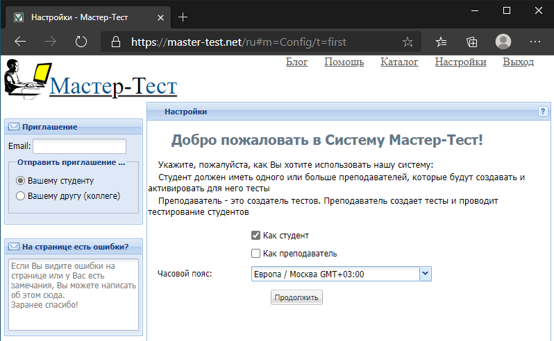
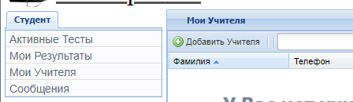

B Инструкция по регистрации в системе Мастер-тест
Зайдите на сайт Мастер-Тест

Нажмите кнопку «Регистрация»
Введите ваше имя и фамилию, а также адрес электронной почты. Придумайте пароль.

На указанный e-mail придёт сообщение с кодом. Введите его в поле «Код»:

После регистрации в системе перейдите на главную страницу
На главной странице укажите, что вы регистрируетесь как студент, и выберите часовой пояс, соответствующий вашему местоположению. Нажмите «Продолжить»

Перейдите на вкладку «Мои учителя» и нажмите кнопку «Добавить учителя» в верхней строке.

В появившемся окне введите код
9c833c4dи нажмите «Добавить»
Доступные вам тесты будут отображаться на вкладке «Активные тесты».